Pro archviztool
User & Technical Integration Guide
This comprehensive guide details the usage and configuration of the ProArchVizTool plugin in Unreal Engine 5. Learn how to structure directories, customize cameras, interact with lighting, swap materials/furniture, and calculate dimensions in real-time.
Part 1: Installation, GameMode & HUD Configuration
This section covers the initial setup of the ProArchVizTool plugin, setting up the custom GameMode, and styling the Slate-based HUD.
Installation & Activation
Point 1To install and enable the ProArchVizTool features in your project:
- Locate your downloaded plugin folder (e.g.,
ProArchVizTool). - Create a folder named
Pluginsat the root directory of your Unreal Engine project (if it does not already exist). - Copy and paste the
ProArchVizToolfolder into your project'sPluginsdirectory.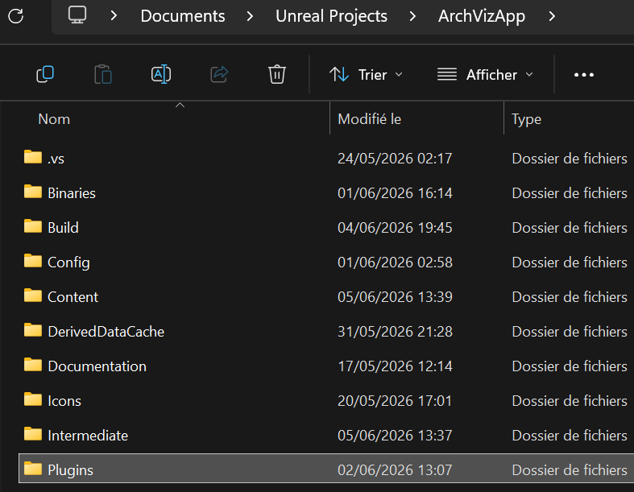
Figure 1.1: Project root folder structure showing the Plugins directory. - Open your project in the Unreal Editor.
- Open the Edit menu in the top toolbar of the editor and click on Plugins.
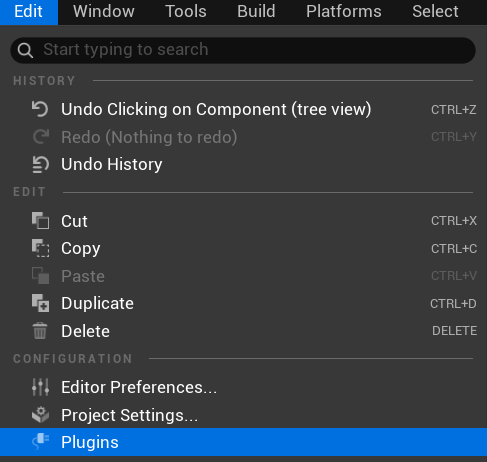
Figure 1.2: Selecting the Plugins menu under Edit. - Search for
Proarchviz toolin the search box. - Check the checkbox next to the plugin to enable it.
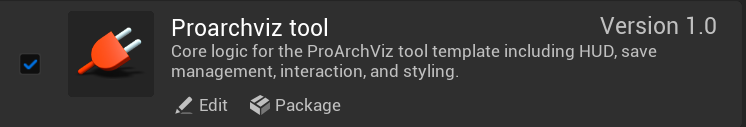
Figure 1.3: Activating the Proarchviz tool version 1.0. - Restart the editor to complete the activation process.
Content Folder Layout
Point 2After activation, the plugin's built-in content, widgets, Blueprints, and assets will be accessible inside the Content Browser under the plugin directory:
- Click on the Settings cog icon in the top-right corner of the Content Browser.
- In the settings dropdown menu, make sure Show C++ Classes and Show Plugin Content are checked.
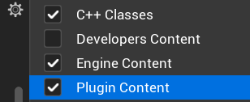
Figure 1.4: Content Browser settings dropdown with Show Plugin Content checked. - The plugin directory contains subfolders for Blueprints, UI assets, C++ classes, and configuration files.
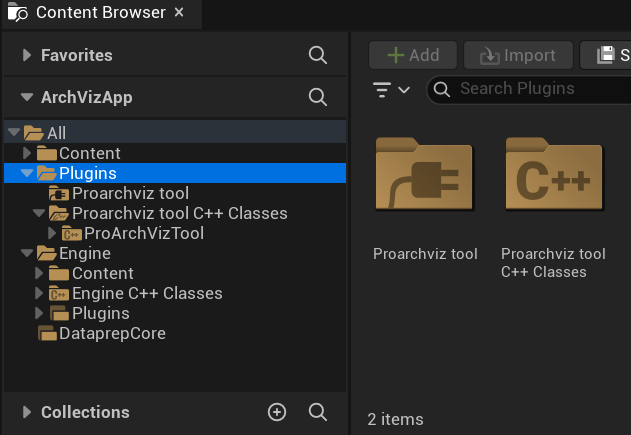
Figure 1.5: Viewing the Proarchviz tool content and C++ class folders in the Content Browser.
GameMode Core Architecture Setup
Point 3The GameMode binds the custom pawn, controller, and HUD together to establish the architectural visualization interaction rules:
- Create a new Blueprint Class. In the Pick Parent Class window, search for and select
ArchVizGameModeas the parent.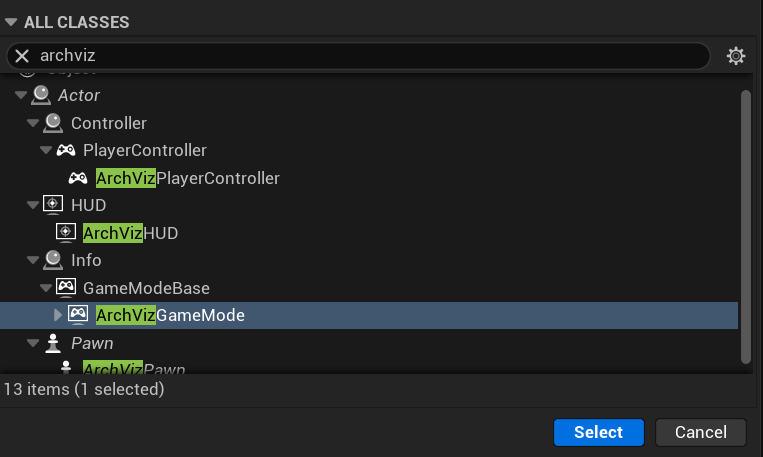
Figure 1.6: Creating a Blueprint class inheriting from the C++ class ArchVizGameMode. - Save and name this Blueprint (e.g.,
BP_ArchvizGameMode).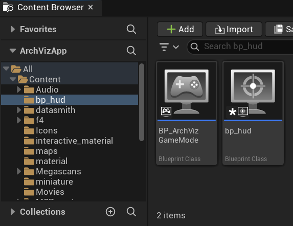
Figure 1.7: The BP_ArchvizGameMode asset in your project Content Browser. - Open the newly created
BP_ArchvizGameModeand navigate to the Details panel:- Default Pawn Class: Assign
BP_ArchvizPawn. - HUD Class: Assign
BP_ArchvizHUD. - Player Controller Class: Assign
BP_ArchvizPlayerController.
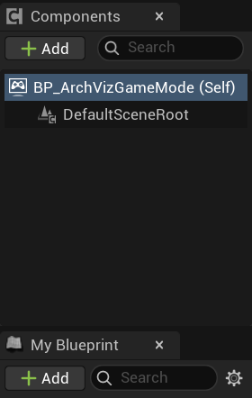
Figure 1.8: The BP_ArchvizGameMode components hierarchy view.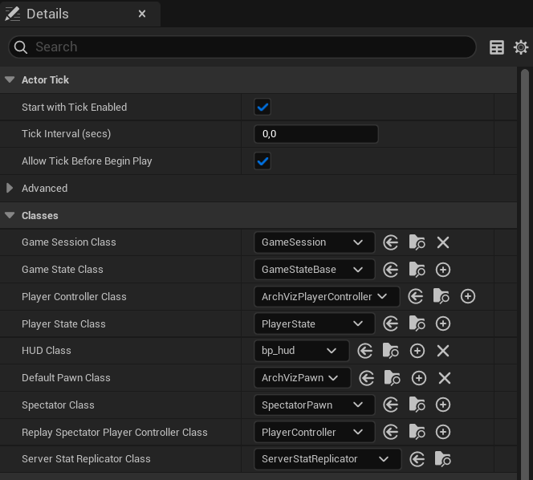
Figure 1.9: Assigning the custom Pawn, HUD, and Player Controller overrides. - Default Pawn Class: Assign
- Compile and save the Blueprint.
HUD Customization & Custom Settings
Point 4The HUD acts as the user interface controller, managing all tool panels. You can customize the look, branding, language, and sounds of your application here:
- Create a Blueprint Class inheriting from
ArchVizHUD(e.g.,BP_ArchvizHUD).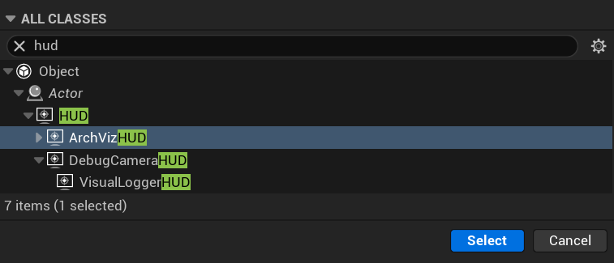
Figure 1.10: Creating a Blueprint class inheriting from the C++ class ArchVizHUD. - Open the HUD Blueprint in the editor.
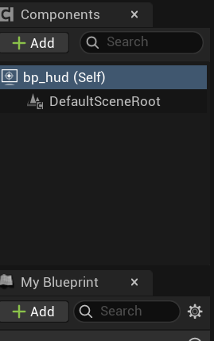
Figure 1.11: The BP_ArchvizHUD asset in your Content Browser. - Under the Details panel, configure the Menu Category settings (such as startup menu options, logo texture
MenuLogo, quit button visibility, and language selector).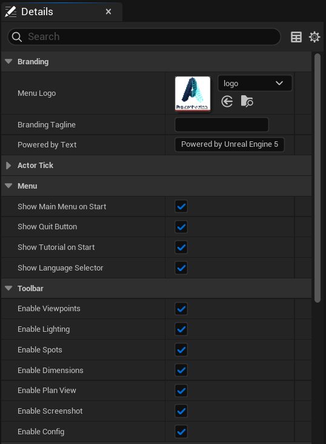
Figure 1.12: Customizing main menu parameters, brand logo, and default tutorial settings. - Configure the UI Category settings (such as center crosshair size
CrosshairDotSize, default opacity, base color, and interactive highlight colors).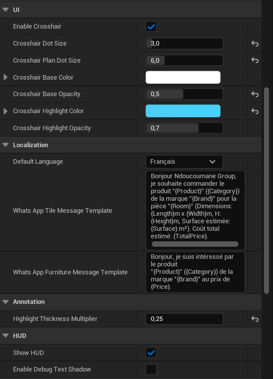
Figure 1.13: Setting up crosshair sizing, opacity values, and active selection color codes. - Configure the Audio Category settings (such as selecting specific sound cue/wav assets for interface interactions like
PanelOpenSound,UIClickSound, andLightSwitchSound).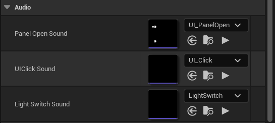
Figure 1.14: Setting up sound effects for panel openings, light toggles, and clicks. - Compile and save the Blueprint.
Part 2: Archviz Pawn Navigation
The custom navigation system supports two distinct view modes: Orbit (3D Perspective) Mode and Floor Plan (2D Orthographic) Mode. This allows users to inspect details from a standard viewpoint or switch to a structured layout map.
Orbit (3D Perspective) Mode Setup
Point 1Orbit mode allows the user to rotate, pan, and zoom around a target focal point, offering an interactive 3D inspection view of the scene.
- Open your
BP_ArchvizPawnBlueprint or select the pawn instance in the level. - In the Details panel, navigate to the Camera category to configure the custom orbit, panning, and zoom parameters:
- Orbit Speed & Pan Speed: Define the responsiveness of rotation and horizontal movement.
- Zoom Speed & Zoom Interp Speed: Set mouse wheel zoom speed and interpolation smoothness.
- Min Arm Length & Max Arm Length: Establish constraints for minimum and maximum camera zoom distance (e.g.,
50.0to3000.0). - Min Pitch & Max Pitch: Control vertical viewing limits (e.g.,
-85.0to85.0degrees). - Orbit Smooth & Pan Smooth: Configure transition damping parameters for fluid movement.
- Min FOV & Max FOV: Restrict the Field of View limits (e.g.,
30.0to110.0degrees).
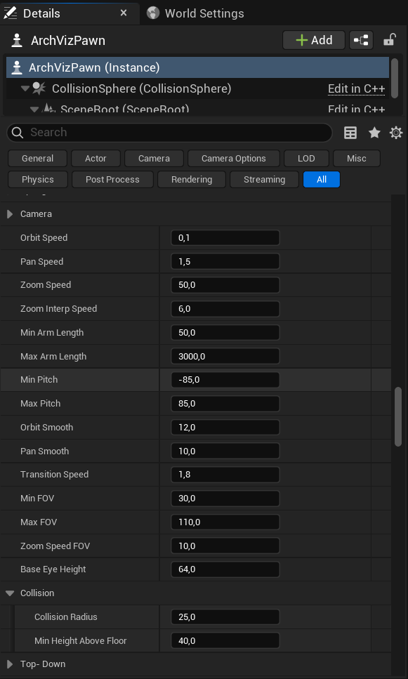
Figure 2.1: Configuring the camera parameters on the Archviz Pawn for 3D navigation. - Under the Collision category, define the pawn's navigation boundaries:
- Collision Radius: Set the bounding sphere radius to prevent clipping through meshes (e.g.,
25.0). - Min Height Above Floor: Enforce a minimum safety height for the pawn (e.g.,
40.0).
- Collision Radius: Set the bounding sphere radius to prevent clipping through meshes (e.g.,
- Select the child Camera component to verify default Unreal Engine parameters under the Camera section:
- Projection Mode: Set to
Perspective. - Field of View: Set the default angle (e.g.,
90.0degrees).
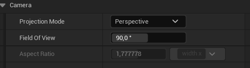
Figure 2.2: Adjusting default perspective projection mode and Field of View settings. - Projection Mode: Set to
- Compile and save the Blueprint.
Floor Plan (2D Orthographic) Mode Setup
Point 2Floor Plan mode shifts the perspective to a top-down layout map view, letting users inspect floor layout spaces.
- Open the
BP_ArchvizPawnBlueprint and navigate to the Details panel. - Under the Top-Down category, customize the top-down camera behavior:
- Top Down Height: Set the default camera elevation height above the floor (e.g.,
2000.0). - Top Down Max Pan X / Y: Restrict horizontal panning bounds in the world space (e.g.,
1200.0). - Top Down Pan / Rotation / Zoom Smooth: Tune interpolation speeds for panning, rotating, and zooming movements in plan view.
- Top Down Min Zoom / Max Zoom: Define camera height limits during zoom interactions (e.g.,
700.0to2000.0). - Top Down Pitch: Enforce a default downward pitch angle for top-down perspective alignment (e.g.,
-60.0). - Top Down Min / Max Pitch: Set the allowed pitch range (e.g.,
-89.9to-45.0degrees). - Top Down Center Actor: Select or link a center pivot actor to define the main focus center point.
- Hide in Plan View Tag: Specify an actor tag (e.g.,
HideInPlan) to automatically hide selected actors (like ceilings or lights) when switching to Floor Plan mode.
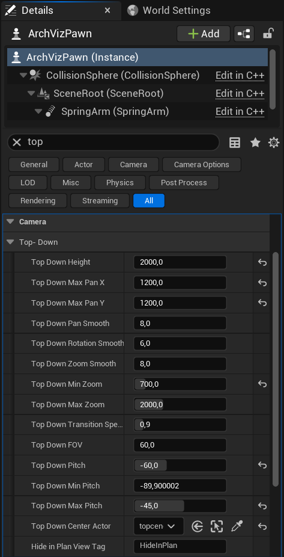
Figure 2.3: Adjusting camera projection properties for Floor Plan navigation. - Top Down Height: Set the default camera elevation height above the floor (e.g.,
- Add the actor tag
HideInPlanto any level meshes that block the top-down camera view (such as ceilings, roof plates, or upper floor boards) to make them disappear automatically in plan view. - Compile and save the Blueprint.
Part 3: Smooth Camera Viewpoints System
The Viewpoints system allows users to define target camera angles in the showroom level, enabling smooth transitions between rooms or highlight areas upon selecting buttons in the HUD.
Viewpoint Placement & Rotation
Point 1To setup camera checkpoints in your visualization project:
- Drag and place the
CameraViewpointactor from the content list into your level viewport. - Position and rotate the actor to face the specific room or area you want to showcase (e.g., the living room, kitchen, or balcony).
Viewpoint Parameter Configurations
Point 2Customize the camera properties on the placed actor instance to configure the UI card and transition target:
- Select the placed
CameraViewpointactor in the editor.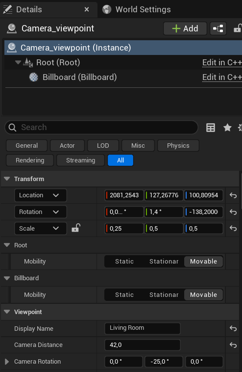
Figure 3.1: Details panel configuration for a custom CameraViewpoint actor. - In the Details panel under the Viewpoint category, configure:
- Display Name: Enter the text label shown on the HUD selection card (e.g.,
Living Room). - Camera Distance: Adjust the float value for the spring arm length from the pivot point (e.g.,
42.0). - Camera Rotation: Configure pitch, yaw, and roll default offset values for camera alignment.
- Display Name: Enter the text label shown on the HUD selection card (e.g.,
Part 4: Day-Night Sky & Lighting Controller
The LightingController manages level lighting actors, fog levels, and day-night presets, allowing users to toggle time-of-day scenarios interactively from the HUD.
Light Actor & Tag Connections
Point 1To sync environmental lighting with the controller, you must bind your level lighting actors:
- Place the
LightingControlleractor in your level. - In the Details panel under the Lighting category, link the following actors:
- Sun Light: Assign your DirectionalLight (representing the sun).
- Ambient Sky Light: Assign your SkyLight.
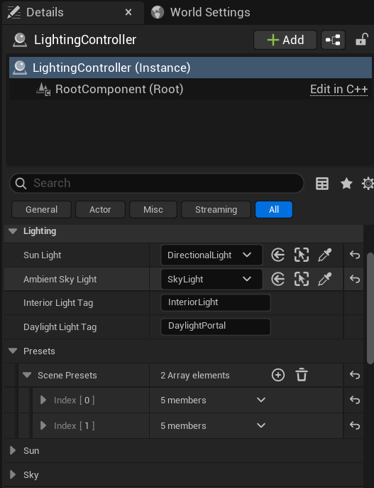
Figure 4.1: Linking primary sky lights and entering identification tags. - Configure the identification tags to locate interior and exterior lights in your scene:
- Interior Light Tag: Enter
InteriorLight(matching tags on your indoor lights). - Daylight Light Tag: Enter
DaylightPortal(matching tags on your daylight portal lights).
- Interior Light Tag: Enter
Time-of-Day Presets Configuration
Point 2Atmospheric presets are stored in the Scene Presets array, defining sun angles and light settings for each time-of-day option:
- Expand the Presets -> Scene Presets array in the
LightingControllerproperties. - For each preset index (e.g. night, Day), configure the following values:
- Name: The display name shown in the HUD (e.g., "night", "Day").
- Icon: Unicode symbol representing the time of day.
- Time Of Day: Float value between
0.0and1.0controlling the sun's height/rotation (e.g.,0.75for night,0.0for day). - Interior Lights On: Check this box if you want interior spot/point lights to turn on automatically during this preset (e.g., night-time).
- Button Color: The button highlight color used in the HUD menu card.
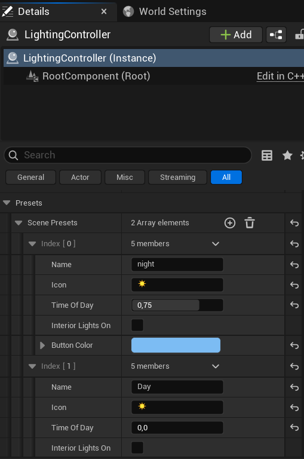
Figure 4.2: Expanding and customizing the parameters for day and night presets.
Part 5: Lamp Groups Control System
The LampGroupActor coordinates groups and subgroups of light fixtures, synchronizing light actors and emissive materials to toggle light states and light intensity dynamically.
LampGroup Setup & Subgroup Array
Point 1To define a collection of lamps under a single UI group:
- Place a
LampGroupActorin your level. - Under the Lamp Group category in the Details panel:
- Group Name: Set the category header name (e.g.,
spot). - Sub Groups: Add element indices representing subgroups (e.g., Living Room Spots, Kitchen Spots).
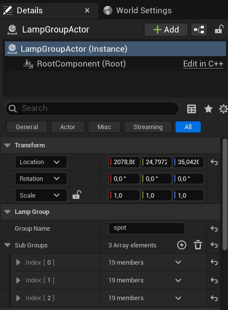
Figure 5.1: Defining the primary Group Name and Sub Groups array size. - Group Name: Set the category header name (e.g.,
Assigning Light Components
Point 2Link the individual light actors that belong to each subgroup:
- Expand a subgroup index (e.g., Index [1]).
- Set the Name parameter of the subgroup (e.g.,
spot Salon).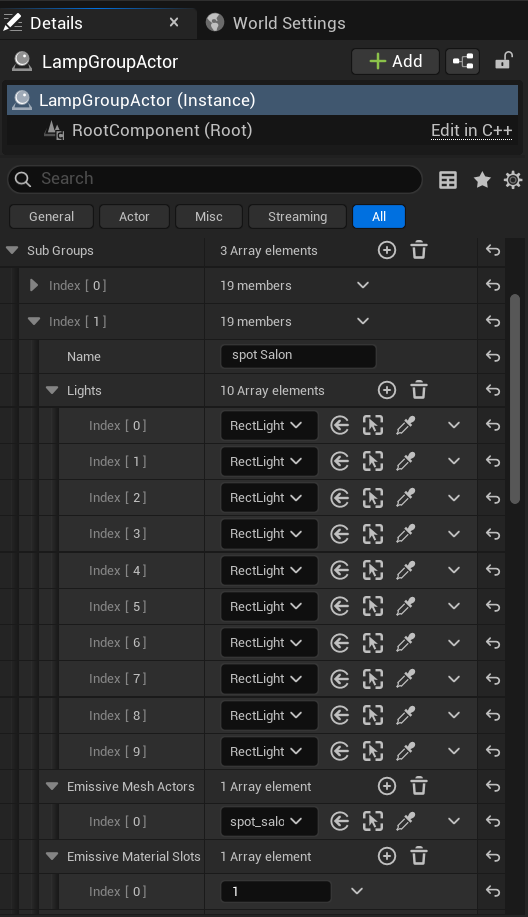
Figure 5.2: Linking the Spot lights array and setting up emissive meshes. - Add elements to the Lights array and link them to the specific light components or actors (e.g. RectLights, SpotLights) in the level.
Emissive Material Synchronization
Point 3To make light fixture meshes glow automatically when turned on:
- Under the subgroup settings:
- Emissive Mesh Actors: Reference the target static mesh actor in the level.
- Emissive Material Slots: Enter the material slot index on the static mesh that contains the emissive material (e.g., slot
1). - Emissive Parameter Name: Set the scalar parameter name defined in the material shader (e.g.,
EmissiveIntensity). - Emissive Color Parameter Name: Set the vector parameter name for color (e.g.,
EmissiveColor). - Max Emissive Value / Off Emissive Value: Set the intensity multiplier for the emissive glow in the ON (e.g.
0.5) and OFF (e.g.0.02) states. - Max Light Intensity / Default Intensity: Set the light components brightness range.
- Use Color Temperature / Color Temperature: Enable color temperature presets (e.g.
7500K). - Start On / Is On: Toggle checkboxes to define the default active state of the subgroup.
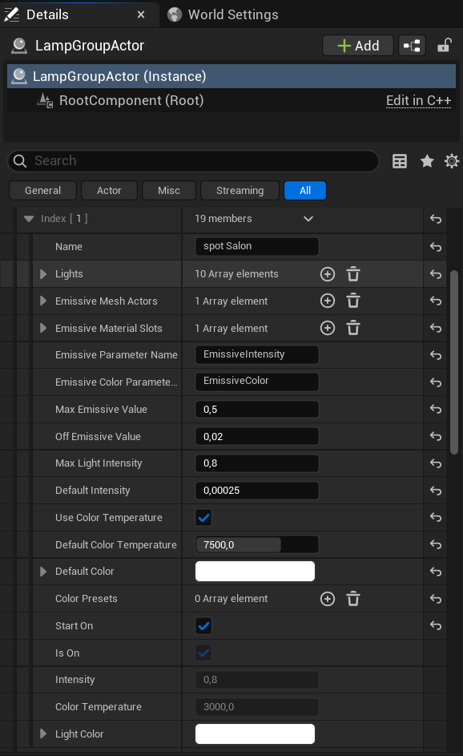
Figure 5.3: Customizing emissive parameters, light intensities, and default states.
Part 6: Component-Based Material Swapper
The MaterialSwapComponent enables users to select alternative materials for specific static mesh slots (such as seat cushions, floors, or tables) dynamically from the HUD.
Material Groups Configuration
Point 1Attach and define the mesh slots targets on your interactive actors:
- Attach the
MaterialSwapComponentto your target actor (e.g.,Aria_Armchair_001). - Navigate to the Material Swap category in the Details panel:
- Material Groups: Add elements to define material swapping categories.
- Group Name: Set the category label (e.g.,
armchair). - Target Slot Indices: Add the slot IDs of the static mesh material slots to modify (e.g., index
2for seat cushion material).
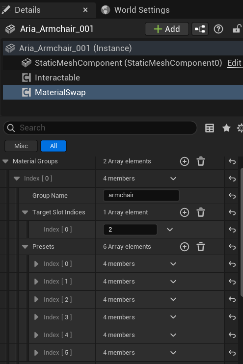
Figure 6.1: Setting up Material Groups and target slot indexes.
Presets & Preview Options
Point 2Store the available material choices for users to select in the HUD menu:
- In the target group, expand the Presets array.
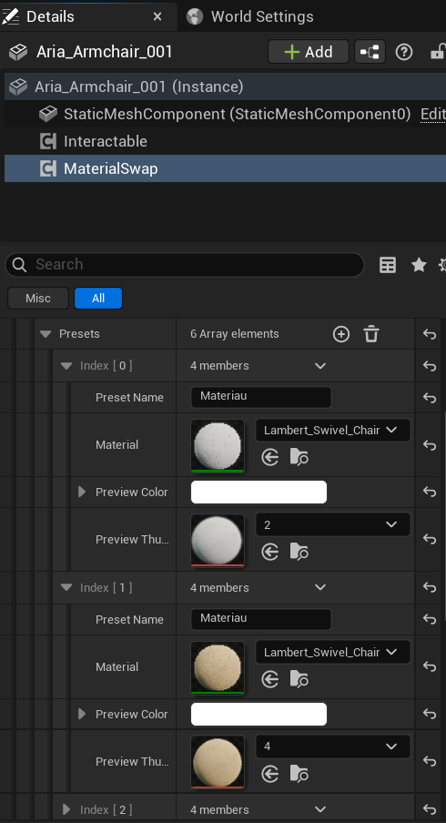
Figure 6.2: Assigning material presets, colors, and thumbnails. - For each preset index, define:
- Preset Name: Display text shown in the HUD selection card (e.g.,
Material). - Material: Assign the material asset interface.
- Preview Color: Highlight color shown in the selection card.
- Preview Thumbnail: The texture asset showing the material texture preview.
- Preset Name: Display text shown in the HUD selection card (e.g.,
Part 7: Component-Based Furniture Swapper
The FurnitureSwapComponent enables users to swap meshes dynamically (e.g., switching wall panel designs or sofa models) from the HUD. It also coordinates material modifications corresponding to the active mesh variant automatically.
Mesh Options & Sizing Settings
Point 1Set up the alternative meshes and preview data:
- Attach the
FurnitureSwapComponentto your target actor (e.g.,wallpanel1).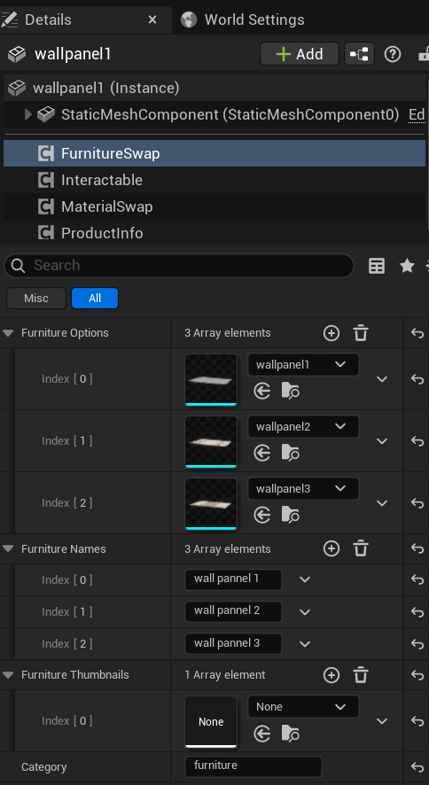
Figure 7.1: Aligning mesh options, name tags, and grow animations. - In the Details panel under the Furniture Options category:
- Furniture Options: Add elements and link alternative static mesh assets (e.g.,
wallpanel1,wallpanel2,wallpanel3). - Furniture Names: Set the name label shown on the HUD cards (e.g.,
wall pannel 1,wall pannel 2). - Furniture Thumbnails: Assign preview thumbnail textures for selection buttons.
- Grow Duration: Set the animation duration (e.g.,
0.25seconds) for the scaling effect when switching furniture.
- Furniture Options: Add elements and link alternative static mesh assets (e.g.,
Per-Variant Material Group Sync
Point 2Configure material swaps to trigger automatically when specific meshes are activated:
- In the component settings, navigate to the Materials category.
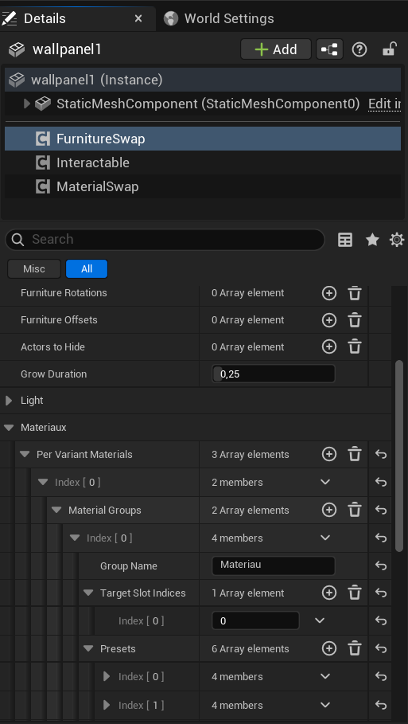
Figure 7.2: Defining slot index mapping under variant material groups. - In the Per Variant Materials array:
- Add index elements corresponding to each furniture option (e.g., Index [0] maps to the first wall panel mesh).
- Material Groups: Add a swapping category under this variant (e.g.,
Material). - Target Slot Indices: Define slot indexes for variant materials (e.g., slot
0).
Variant Material Presets Details
Point 3Set up the specific materials available for each mesh variant:
- Under the variant's material group, expand the Presets array.
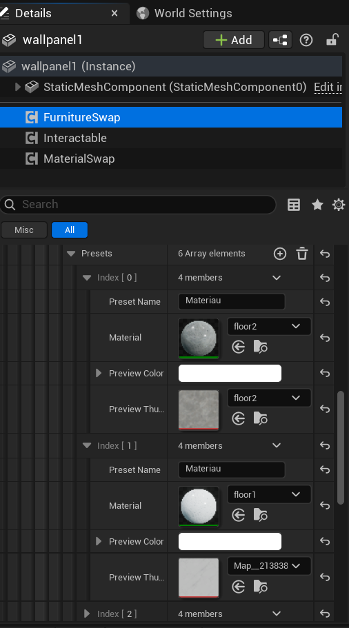
Figure 7.3: Assigning material assets and previews for specific furniture variants. - For each material option, assign:
- Preset Name: Text label (e.g.,
Material). - Material: The target material interface asset (e.g.,
floor2orfloor1). - Preview Color: Selection card background tint.
- Preview Thumbnail: The thumbnail texture showing the material sample.
- Preset Name: Text label (e.g.,
Part 8: Furniture Variant Lighting & LED Customization
When static mesh variants have built-in lights (such as LED strips, backlight panels, or side lamps), the system allows you to link specific light components to furniture variants and customize their color presets from the HUD.
Subcomponent Light Tagging
Point 1Link child light components to their corresponding furniture mesh option:
- Attach light components (e.g., point lights or spot lights like
led_left_var0) as child components to your interactive actor (e.g.,wallpanel1).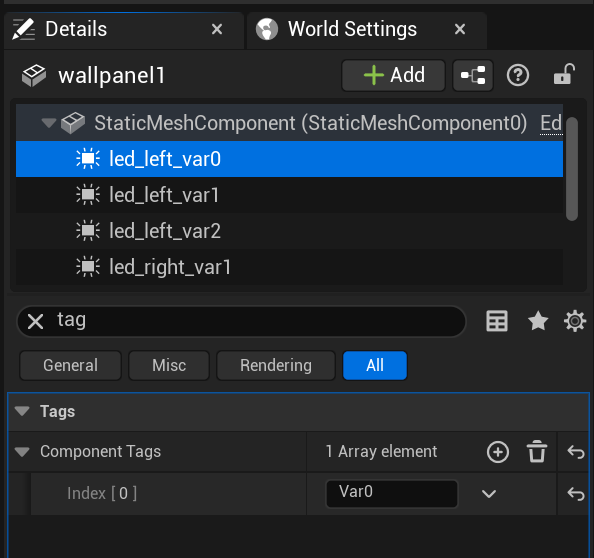
Figure 8.1: Assigning Var0 tag to associate subcomponent lights with variant meshes. - Select the target light component, and search for the Tags section in the Details panel.
- In the Component Tags array:
- Add a unique tag corresponding to the variant index (e.g., enter
Var0at Index [0] to associate this light with the first furniture option). - The plugin automatically toggles visibility and settings based on these tags when switching options.
- Add a unique tag corresponding to the variant index (e.g., enter
Furniture Light Properties
Point 2Enable lighting controls on your furniture swapping actor:
- Select your
FurnitureSwapComponent. - Locate the Light category in the Details panel:
- Has Lights: Check this box to enable integrated light variants.
- Is Light On: Set the default active state of the variant lights (ON/OFF).
- Current LEDColor: The active color state of the lights.
- Current LEDIntensity / Max LEDIntensity: Configure brightness parameters and maximum threshold limit (e.g.,
0.3).
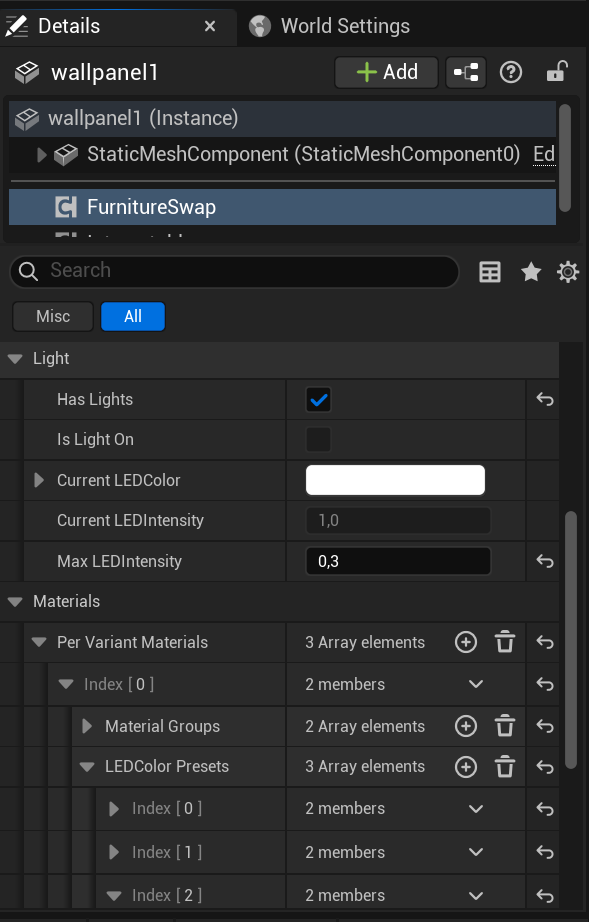
Figure 8.2: Configuring Has Lights checkbox and light intensity thresholds.
LED Color Presets Setup
Point 3Configure the preset colors that users can cycle through using sliders/buttons:
- In the
FurnitureSwapComponent, expand the Per Variant Materials settings. - Open the LEDColor Presets array:
- Add color choices shown in the UI.
- For each preset, set Name (e.g.
yellow,white,blue) and select the corresponding Color parameters.
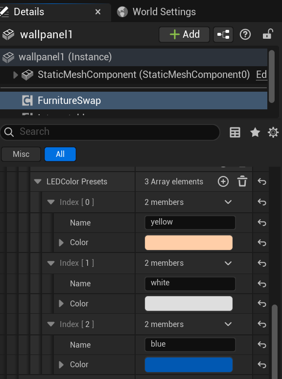
Figure 8.3: Customizing the names and values for LED color presets.
Part 9: Interactive TV Component
The TV component (used alongside the Interactable component) enables interactive television blueprint systems, letting users turn it on/off, select channels, play videos, and control spatial audio.
TV Screen Material & Texture Setup
Point 1Configure the screen mesh and texture parameters:
- Attach the
TVandInteractablecomponents to your TV actor. - Create a Material containing a 2D Texture parameter linked to the Emissive channel (e.g.,
M_TV_Screen). - Under the TV settings in the Details panel:
- Static Mesh Component: Assign the static mesh component that represents the screen geometry.
- Screen Material Slot: Enter the material slot index on the static mesh representing the screen (e.g., slot
1). - Param Name: Set the texture parameter name defined in the screen shader (e.g.,
ScreenTexture).
Sound & Attenuation Settings
Point 2Configure the spatialized audio that matches the video states:
- Add an child Audio component to your TV actor (e.g.,
TV_Sound).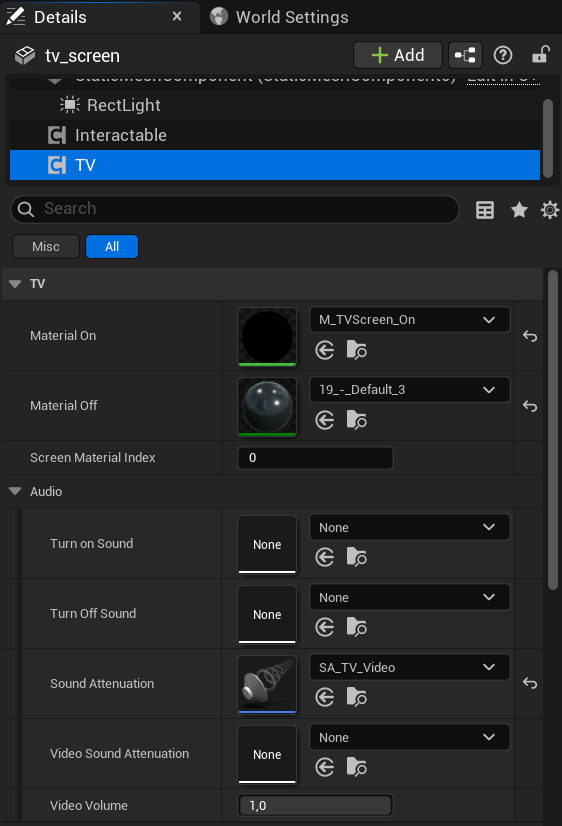
Figure 9.1: Configuring the screen mesh, material parameters, and child audio component. - Under the TV component settings, assign the child component:
- Audio Component: Link the child audio component.
- Sound Attenuation: Link a Sound Attenuation asset (e.g.,
ATT_TV) to physicalize distance-based audio volume falloff.
MediaPlayer & Video Source Setup
Point 3Configure media players and default texture states:
- Locate the TV category settings:
- Media Player: Link your custom Unreal Engine
MediaPlayerasset. - Video Source: Assign a default Media Source asset (local MP4 file or network stream).
- Default Screen Color: Configure the background color of the screen when turned OFF.
- Intensity Screen: Adjust the emissive texture glow brightness when turned ON (e.g.,
1.5).
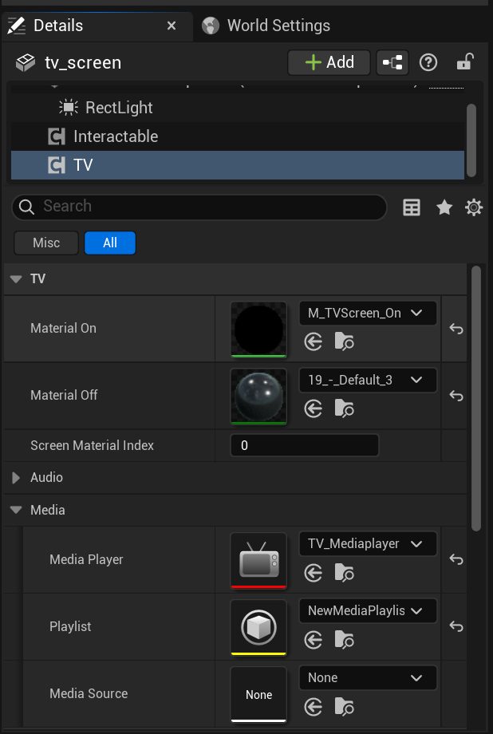
Figure 9.2: Binding MediaPlayer objects, setting default video streams, and tuning screen brightness. - Media Player: Link your custom Unreal Engine
Part 10: Interactive Door Component
The Door component (used alongside the Interactable component) enables doors, drawers, or cabinet panels to rotate or slide open interactively when clicked, supporting angle constraints and spatialized sound effects.
Door Mechanical & Animation Setup
Point 1Configure the movement type, target mesh, and limits:
- Attach the
DoorandInteractablecomponents to your door actor. - Under the Door category in the Details panel, configure the mechanical parameters:
- Door Type: Select
Rotation(for swing doors) orSliding(for drawers, cabinets, and sliding doors). - Target Component: Select the child static mesh component to animate (e.g., the door panel mesh).
- Limits:
- Max Rotation Angle: Define the maximum swing angle in degrees (e.g.,
90.0or-90.0). - Max Slide Distance: Define the maximum sliding distance in centimeters (e.g.,
120.0). - Door Speed: Adjust the open/close animation speed multiplier (e.g.,
3.0).
- Door Type: Select
Linked Doors & Audio Setup
Point 2Sync double doors and configure spatialized sound assets:
- Link double doors to open together:
- Linked Doors: Add actors to the array to trigger synchronous openings (e.g., when the left door is clicked, the right door swings open automatically).
- Configure audio effects under the Audio category:
- Open Sound & Close Sound: Assign sound cue assets for opening and closing sounds.
- Audio Attenuation: Link a Sound Attenuation asset to enforce distance-based audio falloff.
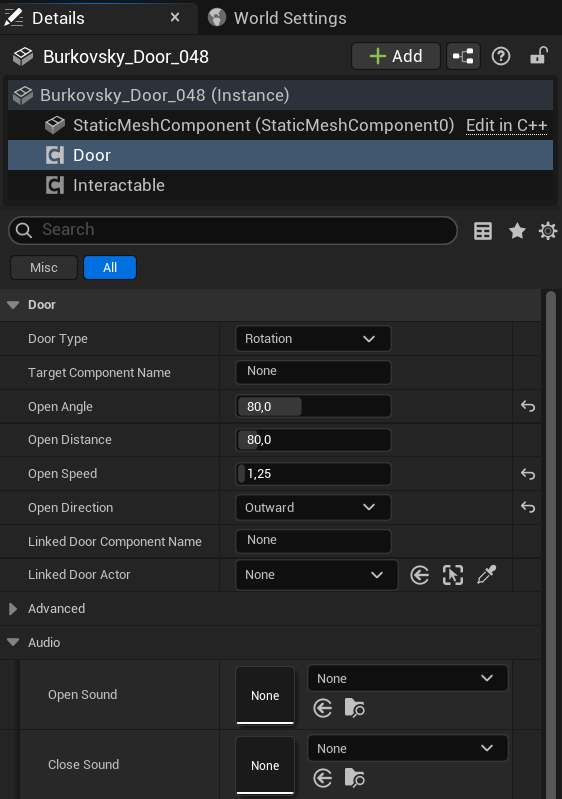
Figure 10.1: Configuring movement types, animation limits, dual-door linkages, and spatialized audio cues.
Part 11: Interactive Faucet Component
The Faucet component (used alongside the Interactable component) enables interactive tap assemblies, letting users click to turn on/off water flow. It coordinates faucet handle rotation, manages spatialized running water sound cues, and drives water simulation assets such as Alembic Geometry Caches or Niagara systems.
Faucet Handle & Movement Settings
Point 1Set up the mechanical handle rotation when the faucet is turned on:
- Select the Faucet Actor in your level (e.g.,
faucet_cgsan_com001). - Attach the
FaucetandInteractablecomponents. - Select the Faucet component and navigate to the Faucet category in the Details panel:
- Handle Component Name: Enter the exact name of the child static mesh component representing the handle (leave as
Noneto target the default handle sub-component). - Open Rotation Offset: Set the rotation values (Roll, Pitch, Yaw) applied to the handle when fully opened (e.g.,
-90.0,0.0,0.0degrees). - Animation Speed: Adjust the speed multiplier for the rotation animation (e.g.,
2.5).
- Handle Component Name: Enter the exact name of the child static mesh component representing the handle (leave as
Water Simulation & Alembic Cache Setup
Point 2Configure the visual water flow using Alembic Geometry Cache files or Niagara particle systems:
- Attach a Geometry Cache component as a child component to the actor.
- Select the Geometry Cache component and assign the source asset (e.g.,
water_simulation) and the water material (e.g.,M_Water_Ocean1).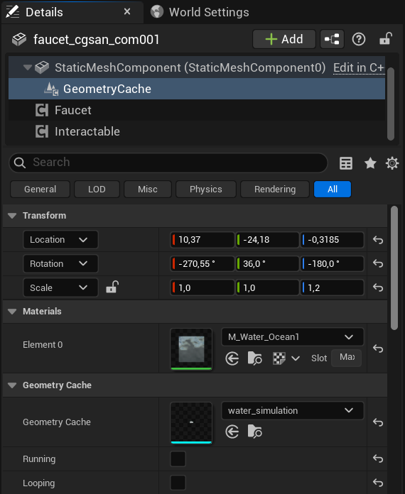
Figure 11.1: Geometry Cache component structure and water material slot configuration. - Under the Faucet component properties, configure the following:
- Water Effect: Link a particle system or Niagara effect if not using Geometry Cache (otherwise set to
None). - Water Attach Point Name: The name of the socket or attach point on the mesh where the water simulation should align (e.g.,
None). - Alembic Category:
- Loop Start Time: Set the start timestamp in seconds for the looped section of the Alembic simulation cache (e.g.,
1.0). - Loop End Time: Set the end timestamp in seconds for the looped section (e.g.,
3.9). - Auto Align Water: Check to let the system automatically position the water stream.
- Water ZScale: Define the vertical scaling scale factor for the water flow (e.g.,
1.0).
- Water Effect: Link a particle system or Niagara effect if not using Geometry Cache (otherwise set to
Audio & Distance Attenuation Settings
Point 3Configure the spatialized audio that matches the running water states:
- Locate the Audio category under the Faucet component:
- Water Sound: Assign the sound wave or cue asset for flowing water (e.g.,
Bathroom_Tap_Water_Source). - Loop Sound: Check this box to enable continuous looping of the flowing sound while the tap is active.
- Audio Attenuation: Link a Sound Attenuation asset (e.g.,
ATT_water) to enable physical distance-based audio volume falloff.
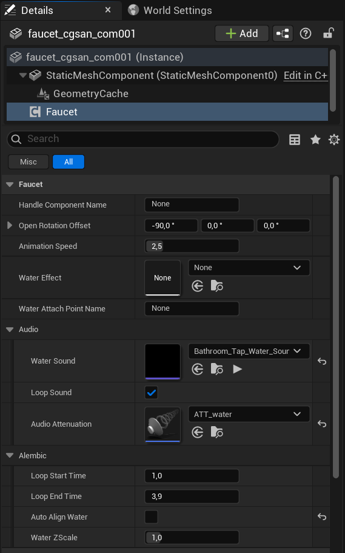
Figure 11.2: Faucet movement properties, audio settings, and Alembic cache looping parameters. - Water Sound: Assign the sound wave or cue asset for flowing water (e.g.,
Part 12: Product Information Catalog System
The ProductInfo component allows actors to link with a central Unreal Engine Data Table database (ProductCatalog), displaying specifications (name, brand, price, description, URL, and preview thumbnails) of furniture or fittings when selected in the showroom viewport. It also coordinates with furniture swapping so that switching a mesh variant automatically pulls the corresponding product info row.
Product Data Table Schema & Entry Creation
Point 1Create and fill the central catalog database with product details:
- Open your
ProductCatalogData Table asset in the Unreal Editor. - Click Add to create a new row, and assign a unique Row Name identifier (e.g.,
Canape_Loft_4P). - Fill out the properties in the Row Editor:
- Product Name: The display title shown to users (e.g.,
Canapé Loft 4 Places). - Brand Name: Manufacturer/Brand label (e.g.,
Maison Design DZ). - Price / Currency: Numeric cost and currency symbol (e.g.,
3500.0and$). - Description: A detailed description of dimensions, materials, and styling (e.g., scandinavian design, fabric details).
- Product URL: A direct external hyperlink to the product's official purchase page.
- Category: Group tag (e.g.,
Sofa). - Thumbnail: Select a 2D preview texture displayed in the catalog HUD panel.
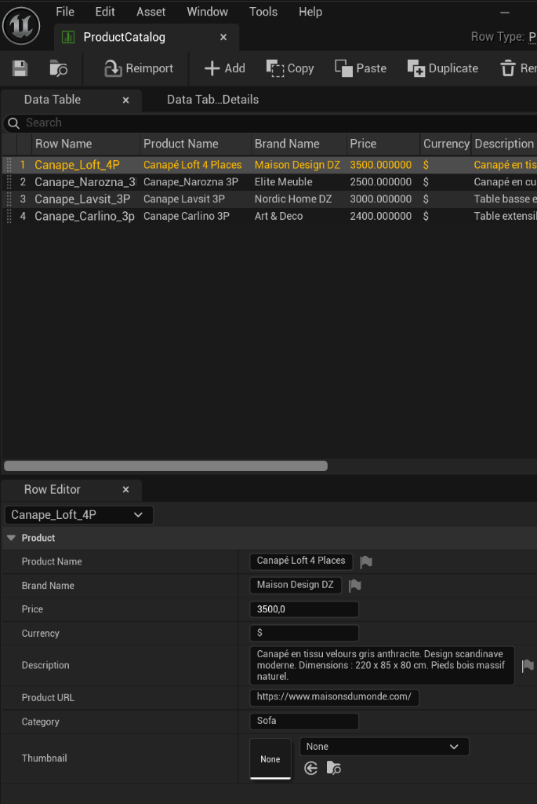
Figure 12.1: Editing catalog database entries, pricing, URLs, and descriptions within the Data Table. - Product Name: The display title shown to users (e.g.,
Assigning Product Info to Actors
Point 2Link interactive scene assets to specific database rows:
- Select your target actor in the viewport (e.g.,
canape). - In the components list, add the
ProductInfocomponent (ensure the actor also contains theInteractablecomponent). - Select the ProductInfo component and go to the Details panel:
- Product Data Table: Bind the
ProductCatalogasset containing the specifications. - Product Row Name: Choose or type the default active Row Name (e.g.,
Canape_Loft_4P).
- Product Data Table: Bind the
Per-Variant Product Mapping
Point 3Sync specifications when a user switches furniture meshes:
- If the actor uses a
FurnitureSwapComponent, expand the Catalog category under theProductInfosettings. - In the Per Variant Row Names array, add rows corresponding directly to the mesh options in the swap component.
- Assign each element index to its corresponding row name (e.g., Index [0] =
Canape_Loft_4P, Index [1] =Canape_Narozna_3P, Index [2] =Canape_Lavsit_3P, etc.). - When a user cycles through options in the viewport, the HUD catalog panel dynamically updates to show the selected variant's active specs, brand, pricing, and purchase link.
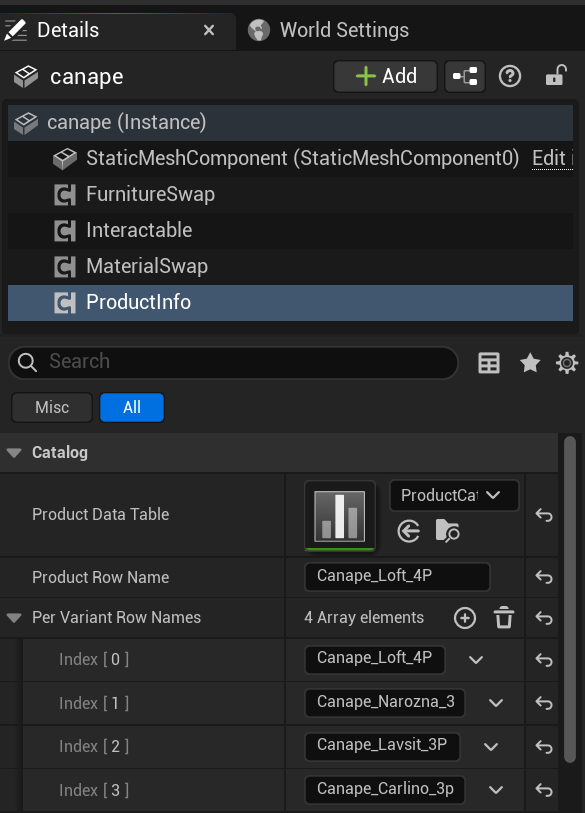
Figure 12.2: Details panel configuration linking the ProductInfo component to the catalog table and variant rows.
Part 13: Room Annotation Component
The room_annotation component enables spatial labeling and auto-dimensioning for zones and rooms. It displays interactive UI badges in the 3D viewport containing room names, height, floor surface area, and volume, alongside physical dimension guide lines.
Room Labeling & Badge Placement
Point 1Configure the basic labeling and 3D positioning for your room annotations:
- Select your annotation actor in the level (e.g.,
salon_2). - Attach the
room_annotationcomponent. - Select the room_annotation component and locate the Annotation and Display categories in the Details panel:
- Room Name: Enter the text label shown in the 3D badge (e.g.,
salon). - Badge Color: Click the color picker to set the theme color of the 3D floating tag.
- Annotation Offset: Define the X, Y, and Z coordinate offset values to position the text badge above the actor's pivot point (e.g.,
0.0,0.0,120.0).
- Room Name: Enter the text label shown in the 3D badge (e.g.,
Auto-Detection & Size Calculations
Point 2Configure raycasting options to automatically calculate room measurements:
- In the Details panel under the Auto-Detection category:
- Auto Detect: Check this box to enable automatic raycast measuring.
- Max Raycast Distance: Define the maximum reach threshold for distance-measuring raycasts (e.g.,
2000.0units). - Raycast Height Offset: Offset the height from the actor pivot where raycasts are fired (e.g.,
100.0units).
- Under the Display category, check the specifications to calculate and display:
- Show Height: Toggle to compute and display the floor-to-ceiling height in meters.
- Show Surface: Toggle to calculate the surface area in square meters ($m^2$).
- Show Volume: Toggle to calculate the volume in cubic meters ($m^3$).
Dimensions Layout & Guide Lines
Point 3Customize the physical layout and visual measurement guidelines:
- Under the Display and Layout settings, configure dimension lines:
- Show Dimension Lines: Check to render interactive measurement guidelines outlining room edges.
- Dimension Line Offset: Adjust the spacing/offset of the dimension lines from the wall surfaces (e.g.,
30.0). - Highlight Thickness Multiplier: Set the line thickness for measurement guidelines (e.g.,
2.0).
- Manage bounding boxes and visibility:
- Hide Mesh in Game: Check this box to hide the reference bounding static mesh or collision volume during play, showing only the text badge and dimension lines.
- Use Mesh Bounds for Dimensions: When checked, the component uses the static mesh's direct bounding box size to compute dimensions instead of utilizing active raycasting.
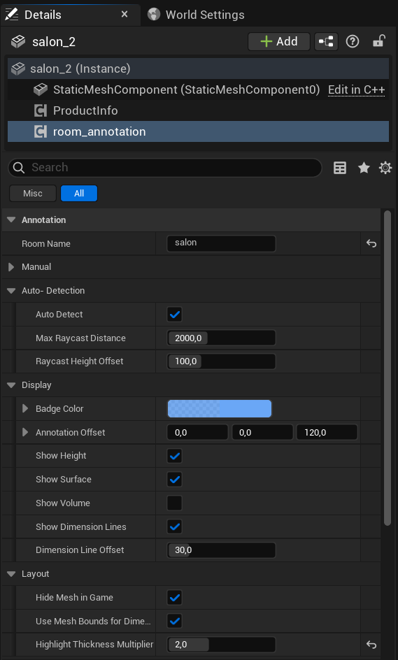
Figure 13.1: Details panel configuration for room labeling, auto-detection, display parameters, and mesh visibility.